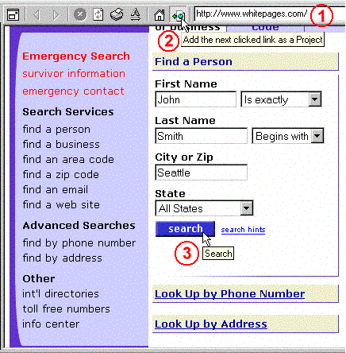

Это очень просто в Offline Explorer Pro или Offline Explorer Enterprise.
Используя встроенный браузер откройте нужную страницу. Далее заполните пустые поля формы.
Перед отправкой формы нажмите кнопку "Добавить следующую нажатую ссылку как Проект" на панели инструментов (смотрите изображение с экрана).
Отправьте заполненную форму.
Offline Explorer Pro создаст новый Проект с параметрами, введёнными в форму. Загрузите Проект для получения результата.
Вы можете использовать этот метод не только для загрузки результатов поиска, но и для входа на сайты, которые непосредственно не поддерживают стандартные методы входа - имя пользователя/пароль.
